A Ceifadora freelancer
"Esta ceifadora está jogando para valer!"


Muitos se apegam a negócios inacabados no plano mortal e todos precisam de um guia para seu próximo destino. Nix combina habilidade incomparável em coletar os muito poderosos e relutantes com uma visão de mundo exclusivamente independente. Ela arrebatou o Titã Imóvel de Heraklion até Hades e, na viagem de volta, deixou a antiga Esfinge de Alexandria na porta da frente de Anúbis. Ela arrastou o Banshee de Donegal de cem pernas chutando e gritando para o Reino de Arawn. O Undead Lord of Elyria foi seu primeiro cliente recorrente e uma boa fonte de trabalho constante. O desastre aconteceu quando ela conseguiu um emprego coletando um panteão inteiro cuja hora havia chegado. Quando a poeira baixou, faltavam onze dos alvos. Nix não é do tipo que erra o alvo, e o orgulho profissional a colocou em uma caçada de mil anos que a levou finalmente a Valhalla. O paraíso dos guerreiros de Odin é o lar de todos os tipos de infratores metafísicos e almas desonestas. Nix vê uma oportunidade de obter um bom lucro fechando alguns casos arquivados cosmológicos como o meio-urso viking, aquele mafioso presunçoso e talvez até o cavaleiro de ouro. Enquanto isso, ela luta no Grande Torneio, sabendo que sua presa de quetzalcoatl deve estar aqui em algum lugar.
 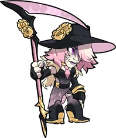
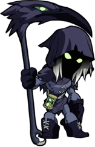
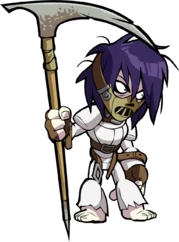
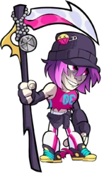
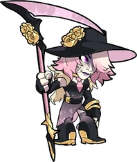
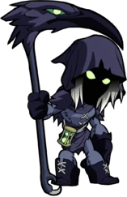
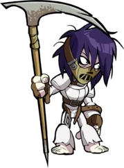
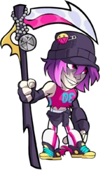
 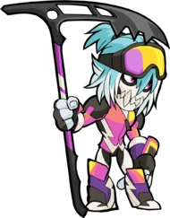
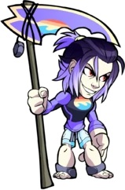
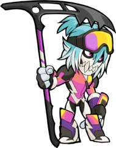
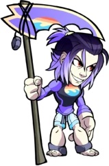